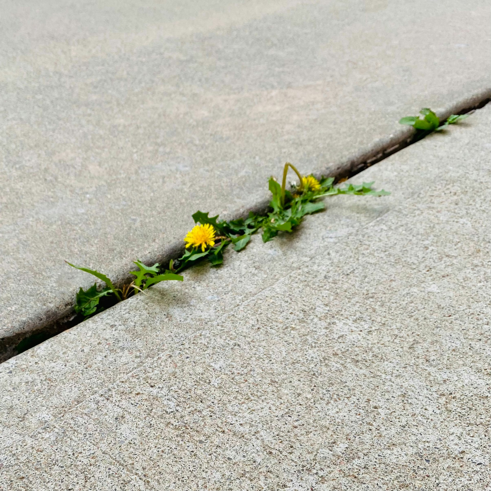
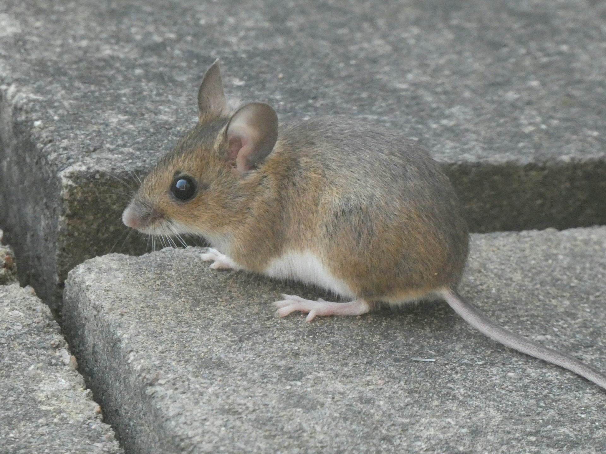

flowchart LR
Rein@{shape: circle} --> Leben@{shape: circ, label: "Leben"}
Leben --> Raus@{shape: circle}
style Rein fill:#F4F4E7,stroke:#F4F4E7;
style Leben stroke:#F4F4E7;
style Raus fill:#F4F4E7,stroke:#F4F4E7;
Was ist Leben?
Lebendiges unterscheidet sich vom Unlebendingen. Wir Menschen können im Alltäglichen ohne weiteres zwischen Lebendigem und Unlebendigem unterscheiden. Unsere Sinne täuschen uns selten aber bedeutet das, dass wir wirklich wissen was Leben heißt?


Scheinbar Unlebendiges entpuppt sich manchmal als Leben und umgekehrt. Deshalb hat die Biologie und andere Wissenschaften über die Zeit eine Vorstellung vom Leben entwickelt, die praktische als auch theoretische Arbeit ermöglicht, ohne in ergebnislosen und nicht endenden Diskussionen abzugleiten. Es ist nicht die einzige mögliche Erklärung des Lebens aber eine für Naturwissenschaften recht greifbare.
Dies sind die deskriptiven Kennzeichen des Lebens.
Stoffwechsel und Gleichgewicht
Alle Lebewesen müssen etwas von außerhalb ihres eigenen Körpers aufnehmen und geben etwas ab.
Dabei wird das was hinein geht irgendwie in das was hinaus geht umgewandelt. Das was hinein geht steht mit dem was hinaus geht in einem Fliessgleichgewicht. Dieser Prozess heisst Metabolismus.
Aufrechterhaltung von Bedingungen und Abgrenzung
Das Leben findet in einem abgegrenzten Raum statt.
flowchart LR
Rein@{shape: circle} --> Leben@{shape: circ, label: "Leben"}
Leben --> Raus@{shape: circle}
style Rein fill:#F4F4E7,stroke:#F4F4E7;
style Raus fill:#F4F4E7,stroke:#F4F4E7,strok;
Damit der Metabolismus unter optimalen Bedingungen ablaufen kann, muss er vor äußeren Einflüssen geschützt werden. Das Leben schließt sich also ein und trennt sich von der unbelebten Welt. Das ermöglicht auch die Kontrolle der Bedingungen.
Verhalten
Das Leben zeigt typische Reaktionen auf Belebtes und Unbelebtes.
flowchart TD
Bolt1@{shape: bolt} --> Da@{shape: circ, label: "Leben"}
Bolt2@{shape: bolt} --> Weg@{shape: circ, label: "Weg"}
style Weg fill:#F4F4E7,stroke:#F4F4E7;
Das beinhaltet, dass das Leben durch Sensoren Reize aufnimmt und sie mithilfe von Informationsverarbeitung in einer entsprechenden Reizreaktion umwandelt. Die Gesamtheit solcher Prozess nennt sich Verhalten.
Wachstum
Alles was lebendig ist muss wachsen.
flowchart LR
Klein@{shape: circ, label: "Klein"} --> Groß@{shape: circ, label: "Ich bin gewachsen"}
Dabei wird ein Teil von dem was hinein geht verwendet. Wachstum passiert wenn der Anabolismus stärker als der Katabolismus ist.
Vermehrung
Aus Lebendigem entsteht Lebendiges.
flowchart LR
Groß@{shape: circ, label: "Ich bin gewachsen"} --> Klein1@{shape: circ, label: "Klein"}
Groß --> Klein2@{shape: circ, label: "Klein"}
Dieser Vorgang heißt Reproduktion und ist einer der ätesten und kompliziertesten Vorgänge des Lebendigen.
Bauplan und Funktionsplan
Wenn aus Leben Leben neues Leben entsteht, muss das neue Leben wissen wie es aussehen und funktionieren soll.
flowchart LR
Groß@{shape: circ, label: "Ich bin gewachsen"} -.-x Klein1@{shape: rounded, label: "Klein"}
Groß --> Klein2@{shape: circ, label: "Klein"}
Erstens, irgendwo befindet sich ein Ort, an dem Information für den Bau neuer lebendiger Einheiten festgehalten ist. Zweitens, diese Information muss irgendwie weitergegeben werden.
Kurzfristige und langfristige Anpassung
Das Leben versucht sich immer, anzupassen.
flowchart LR
Anfang1@{shape: circ, label: "Leben"} --> Ende1@{shape: circ, label: "Leben"}
Anfang2@{shape: circ, label: "Leben"} --> Zwischen2@{shape: circ, label: "... ... ... ... ..."} --> Ende2@{shape: rounded, label: "Leben"}
style Ende1 fill:#F4F4FF;
style Zwischen2 fill:#F4F4E7,stroke:#F4F4E7;
style Ende2 fill:#F4F4FF;
Die Anpassung des Lebens an Veränderung kennt zwei Geschwindigkeiten. Die schnelle Art beruht auf den Möglichkeiten, die der Bau- und Funktionsplan bietet. Die langsame Art heißt Evolution. In beiden Fällen nennt sich der prozess Adaptation.
Arbeitsaufträge
Reiche die Antworten als digitales Dokument ein und verwende keine Schreibschrift. Beantworten mindestens fünf Aufträge aber beschäftige Dich mit dem Rest. Es könnten interessante Sachen für eine LSÜ dabei sein. Stufe I ist auf E Niveau, Stufe II ist auf E/A Niveau, Stufe III ist komplett auf A Niveau angesiedelt.
Stufe I
Womit beschäftigt sich die Naturwissenschaft Biologie? Gib eine einfache Beschreibung an.
Gib die einfachste Beschreibung des Begriffs Metabolismus an.
Schau Dir Abbildung 3 an; wie kommt das Fliessgleichgewicht zustande?
Definiere Homöostase.
Beschreibe was ein Reiz ist. Gib ein Beispiel für etwas, was kein Reiz ist.
Erkläre in einem Satz was Wachstum bedeutet.
Definiere möglichst einfach die Begriffe Anabolismus und Katabolismus.
Beschreibe in zwei Sätzen die Reproduktion.
Wie heißt die biologische Information? Wo wird sie üblicherweise gespeichert?
Stufe II
Betrachte Abbildung 2 und nenne jeweils was in Pflanzen und Tieren hinein und hinaus geht.
Mit welchem Naturstoff oder Material grenzt sich das Leben von seiner Umgebung ab? Was bildet dieser Naturstoff?
Wie nennt sich die biologische Grundeinheit, die nach der Abtrennung von der Umgebung erfolgt?
Gib den Namen der Struktur an, die bei höheren Tieren wie wir Menschen, für die Informationsverarbeitung der Reize verwendet wird.
Von welchem Zeitraum sprechen wir, wenn wir von schneller und langsamer Anpassung sprechen in Abbildung 8?
Stufe III
Warum muss etwas in das Lebendige hinein gehen und heraus kommen in Abbildung 2? Was wird da verwendet und warum?
Ist das Innere in Abbildung 3 in Gleichgewicht mit seiner Umgebung?
Was ist der Tod?
Erläutere den Zusammenhang zwischen Wachstum und Reproduktion.
Was muss auf jeden Fall innerhalb der biologischen Einheit in Abbildung 5 wachsen und warum?
Was sorgt jeweils für die schnelle und die langsame Anpassung?